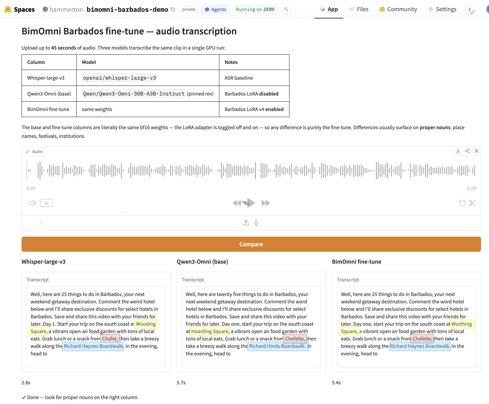
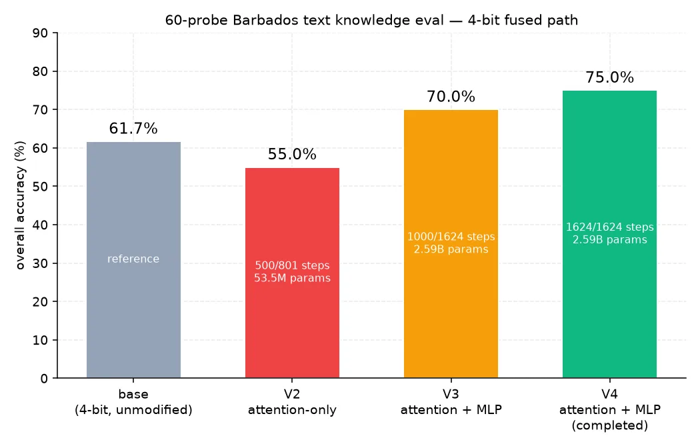

BimOmni hears Barbados properly.
A small LoRA on top of Qwen3-Omni-30B-A3B-Instruct, trained on ten years of the Barbados Advocate. Published openly on the Hugging Face Hub as a fused bf16 checkpoint and a 4-bit MLX snapshot that runs on a MacBook.

A reproducible template, not a finished product
BimOmni is one part of Pulse, a public-signal intelligence system for Barbados built during the Future Caribbean buildathon. Pulse ingests fragmented social, broadcast and news signals and resolves them into a graph of sources, places, events, people and communities. The island-wide product is live at pulsebarbados.com.
The model itself is not tied to Pulse. It can be used independently for Caribbean-domain transcription, information extraction, search, summarisation, research and other multimodal applications. It is a research artefact built during a 21-day buildathon, not a commercial product — treat its outputs as a starting point for human review rather than as ground truth.
What it is, concretely: a parameter-efficient LoRA on Qwen3-Omni's text-only "Thinker", trained on roughly 51.6 million tokens of cleaned Barbados newspaper text. The audio and visual encoders are frozen. The model is better at choosing between plausible outputs given ambiguous audio — not at hearing the audio itself.
Three tracks, three answers, no theatrical claims
BimOmni was scored on three independent tracks. The headline number is honest and small: it is a research artefact, not AGI, and the eval sets are deliberately tiny. Reproduction details and exact scores live in the model card.

| Track | Qwen3-Omni base | BimOmni | Note |
|---|---|---|---|
| Barbados knowledge (60 probes) | 61.7% | 75.0% | +13.3 pp overall |
| Local (20 well-known probes) | 55.0% | 70.0% | +15.0 pp |
| Rare local (20 niche probes) | 40.0% | 60.0% | +20.0 pp |
| General controls (20 probes) | 90.0% | 95.0% | +5.0 pp |
The concrete example worth quoting
The clearest signal is the proper-noun test. Whisper transcribed Carlisle Bay as "Carlyle Bay" and Oistins Fish Fry as "Oistin's Fish Fry". BimOmni transcribed all ten local proper nouns correctly, against two or three for the unadapted baselines.
| Reference | Whisper | Qwen3-Omni | BimOmni |
|---|---|---|---|
| Worthing Square | Wooding Square | Willing Square | Worthing Square |
| Chefette | Shafet | Chefette | Chefette |
| Richard Haynes | Richard Hines | Richard Hinds | Richard Haynes |
| Q.P. Bistro | Kupi Bistro | QPB Bistro | Q.P. Bistro |
| Oistins Fish Fry | Oistin's Fish Fry | Oyston's Fish Fry | Oistins Fish Fry |
| Puddin' and Souse | putting on south | Puddin' and Sauce | Puddin' and Souse |
| Farley Hill | Farley Hill | Carlisle Hill | Farley Hill |
| Animal Flower Cave | Animal Flower Cave | Animaux Flower Cave | Animal Flower Cave |
| Carlisle Bay | Carlyle Bay | Carlisle Bay | Carlisle Bay |
| Champers | Champas | Champers | Champers |
These ten examples were selected to examine local proper-noun handling. They are not a complete word-error-rate benchmark and the two-video comparison should not be read as a general ranking of transcription systems. Whisper remained substantially faster on both samples.
Wukking Up the Model
ONE-UWI Sustainable Futures Open Virtual Conference 2026
Digital and Connected Futures track · 17–18 September 2026
Whisper recently transcribed Sir Garfield Sobers as "cigar field sodas". That's the failure this talk starts from — and the joke that the Wukking Up the Model preprint asked me to take seriously. For ONE-UWI's Sustainable Futures conference I walk through the BimOmni recipe — the 51.6 M-token Barbados Advocate corpus, the LoRA on Qwen3-Omni's Thinker, the MacBook-ready 4-bit snapshot — and the reproducible playbook another Caribbean team could run for Trinidad, Jamaica, Guyana, Antigua or anywhere else.
If you represent an institution, government or research group looking to adapt this for another island — or to push the work further into audio, dialect and creole — let's connect.
Watch the talk
Voice of Barbados · NewsMakers
Voice of Barbados 92.9 FM
NewsMakers interview with Matt Hamilton · Dharach
In this NewsMakers conversation on Voice of Barbados 92.9 FM I cover BimOmni end to end: why a frontier model still mishears a Bajan accent, what's missing when you ask a generic assistant for a "faucet" in Barbados, how the Barbados Advocate archive became 51.6 million tokens of training data, and what kadooment and cobbler pot taught a model that off-the-shelf speech recognition had never learnt.
Yuh Gettin Tru and WeOutside246 come up as well — they are the same idea in product form. Island-wide product search across 100+ retailers, and an events aggregator that keeps the Crop Over calendar honest. Both exist because generic search drops you the moment local context matters.
I moved to Barbados on the Welcome Stamp in August 2021. BimOmni is what came of living here long enough to know what the assistants were missing.
Listen to the interview
The artefacts and where to find them
Everything is published openly. The training corpus is not redistributed — it is drawn from a public Caribbean Digital Library archive, used under research-purpose terms.
- System Built as part of Pulse, during the Future Caribbean buildathon
- Author Matt Hamilton · matt@dharach.com
- Base model Qwen/Qwen3-Omni-30B-A3B-Instruct (Apache-2.0)
- Fused bf16 hammertoe/BimOmni-30B-A3B
- MLX 4-bit hammertoe/BimOmni-30B-A3B-MLX-4bit
- LoRA adapter hammertoe/Qwen3-Omni-30B-A3B-Barbados-LoRA-v4
- Code Training, evaluation, fusion, MLX quantisation and chunked-transcription pipelines · private for now; the public release follows the hackathon's data-room rules
Want to ship something real?
I'm available for consulting on civic tech, useful AI, and digital public infrastructure across the Caribbean and beyond.